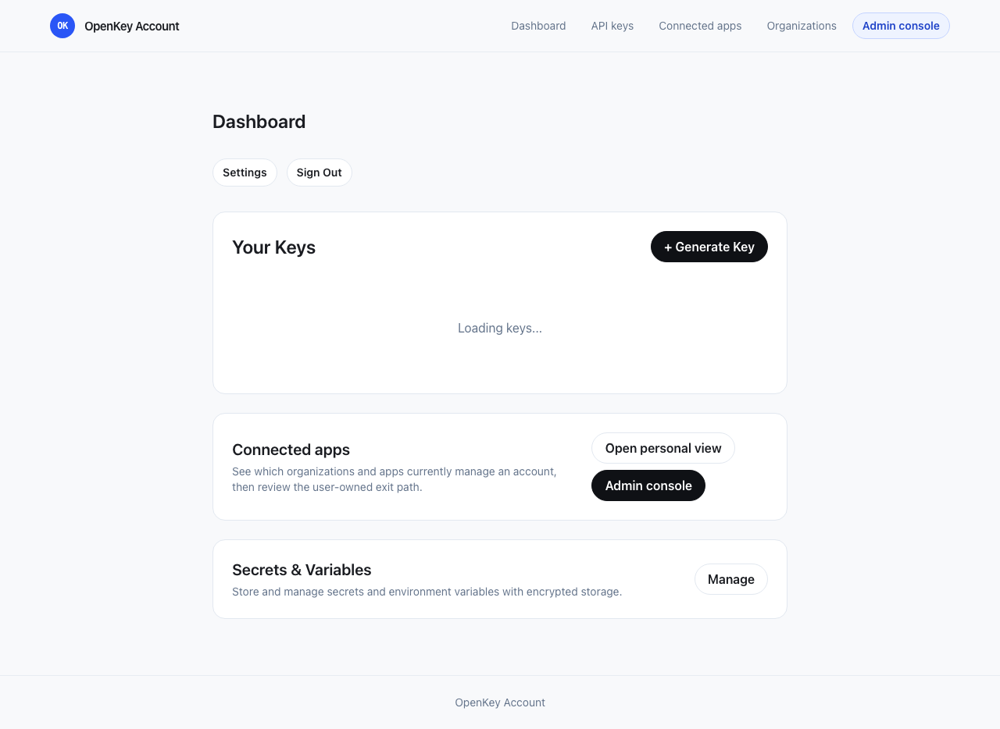

TC-476 · Console host journey
OpenKey Account and Console are distinct, continuous surfaces.
The account app remains the place for personal keys and identity. The console is the administrative control plane for an organization.
Happy path
https://openkey.so/dashboard exposes a clearly labeled Admin console destination.https://console.openkey.so/console lists and creates organizations./console/:organizationId/apps keeps the organization, role, and administrative navigation visible while work happens.Visual verification
The account dashboard keeps the administrative destination explicit and visually distinct. This is a browser capture of the built worker with the dashboard's API responses represented by a signed-in fixture.

Authentication continuity
A signed-out console visitor is sent to the account sign-in screen with the exact console destination as a constrained return URL. Only the configured console origin and the /console path family are accepted as cross-origin return targets.
Non-production runtime evidence (2026-08-03): a real Better Auth handler backed by an isolated in-memory database signs in from openkey.so, emits a secure Domain=.openkey.so session cookie, then accepts that cookie for https://console.openkey.so on the API session endpoint. The same test verifies the console is a trusted social-auth origin. The compiled Cloudflare worker matrix also proves the account-to-console redirect target. The dashboard image above is a signed-in fixture, not the session proof.
Deployed cookie-domain behavior remains production-only: local development deliberately disables the domain attribute, and this change neither deploys nor inspects production.
Host boundary
openkey.so/console/:organizationId/apps?tab=active responds with a permanent redirect to console.openkey.so/console/:organizationId/apps?tab=active. The bare console hostname redirects to /console. Legacy console-host dashboard bookmarks return to the account host, while unrelated personal paths remain a 404 rather than rendering the personal account app. The compiled-worker smoke test also asserts that console.openkey.so/console and an organization apps deep link return HTML successfully, alongside the account dashboard happy path.
The managed-account architecture and project documents used to be static HTML files. Cloudflare Pages excluded those paths in generated _routes.json, allowing the static-asset path to run before hooks.server.ts. They are now server-bundled endpoint templates, so they traverse the worker host guard.
Built-worker matrix (2026-08-03): generated _routes.json includes /* and excludes only /_app/version.json and /_app/immutable/*. On console.openkey.so, each canonical managed-account document and its /index.html form returns the reserved-host 404 without a document marker; trailing-slash forms canonicalize to that same guarded URL. On openkey.so, both canonical documents return 200 with their original content. The automated artifact and Wrangler tests lock this behavior.
Local development
With no VITE_CONSOLE_ORIGIN, account and console links stay on the same local Vite host. Contributors can prove the journey at http://localhost:5173/console without local DNS. Production supplies VITE_CONSOLE_ORIGIN=https://console.openkey.so, CONSOLE_ORIGIN=https://console.openkey.so, and includes the console origin in API CORS.